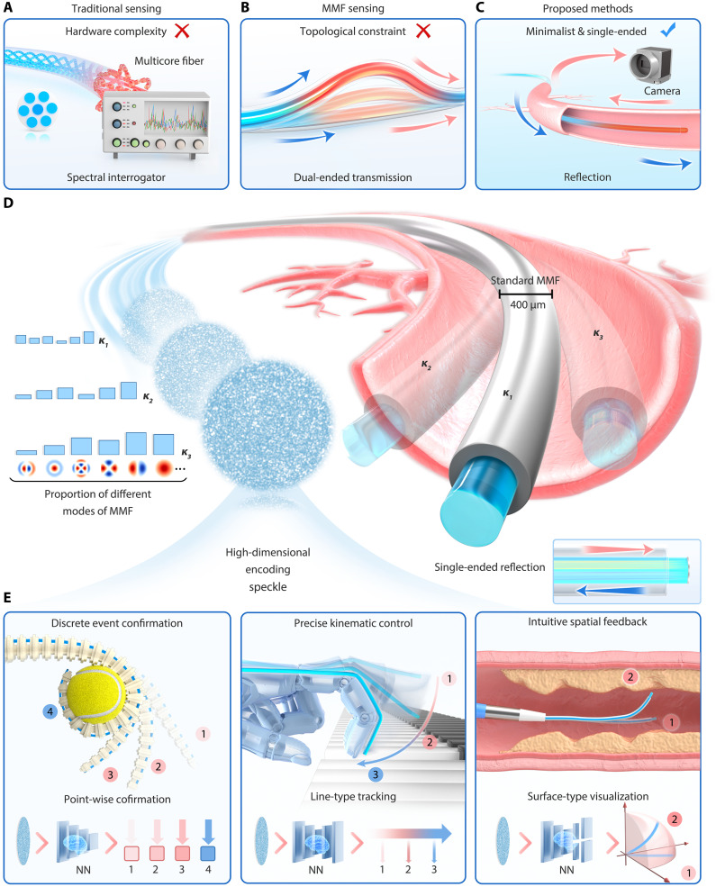
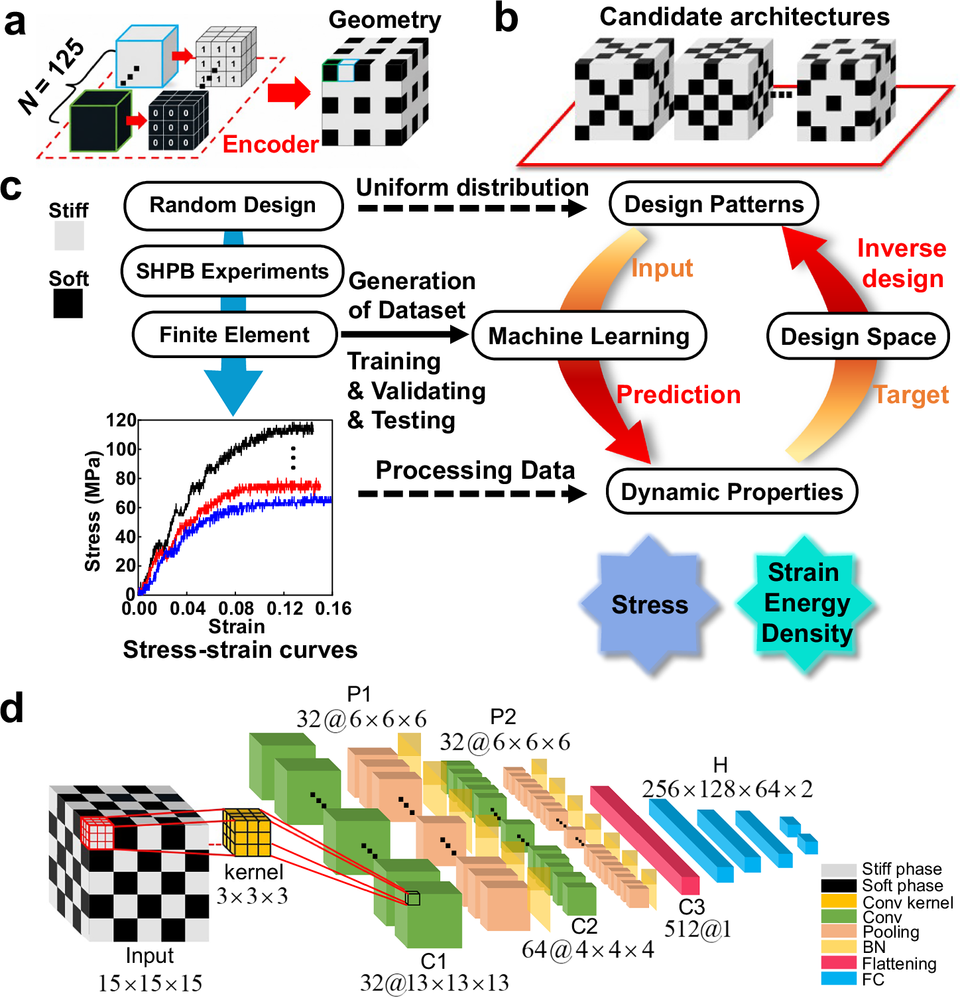

正在阅读 2026-09-27 · 第 1 批 归档。返回最新一期
每日论文推荐
检索本期论文
开启 JavaScript 后可使用筛选与排序。论文与目录可直接阅读。
本期推荐正在准备 可先浏览历史归档，或查看来源状态。
没有符合条件的论文 试试其他关键词，或减少筛选条件。
清除筛选
Semantic Scholar 2026-09-17 结构生成式设计与可靠性优化
Reliability Analysis of TPMS Structures Considering Uncertainties in Operating Conditions
Peng Yue, Yun-Long Zhao, Qing-Qing Yang 等 Fatigue & Fracture of Engineering Materials & Structures
由扩展阅读升级 · 上次 2026-09-26 第 1 批 摘要明确研究TPMS支架疲劳可靠性，并提供有限元、主动学习代理模型与不确定性传播的具体方法链，足以支持其契合疲劳可靠性方向且值得重点阅读；但不能据此认定其属于生成式设计方法，也不足以验证定量性能优势。[摘要]
查看原推荐批次 摘要解读已完成，全文待补充
本文面向径向梯度陀螺曲面型TPMS钛合金支架，研究载荷与材料属性不确定性下的疲劳可靠性。作者将有限元、主动学习高斯过程回归、蒙特卡洛模拟及Basquin模型结合，分析孔隙率60%至80%的五种仿骨圆柱支架，并以应力场第95百分位数表征高应力。摘要称该框架可高效支持可靠性导向设计与孔隙率选择，但未给出误差、加速比或可靠性数值，尚不足以量化评价效果。[摘要]
原图待获取 · 查看原文
依据公开摘要整理，未核验全文细节。解读与建议不代表作者结论。 论文依据 1
中文导读
本文面向径向梯度陀螺曲面型TPMS钛合金支架，研究载荷与材料属性不确定性下的疲劳可靠性。作者将有限元、主动学习高斯过程回归、蒙特卡洛模拟及Basquin模型结合，分析孔隙率60%至80%的五种仿骨圆柱支架，并以应力场第95百分位数表征高应力。摘要称该框架可高效支持可靠性导向设计与孔隙率选择，但未给出误差、加速比或可靠性数值，尚不足以量化评价效果。[摘要]
阅读建议 推荐关注疲劳可靠性与轻量化结构设计的研究者阅读，重点考察主动学习代理模型与不确定性传播的衔接；若关注生成式设计，摘要尚未提供直接方法证据。[摘要]
作者 Peng Yue, Yun-Long Zhao, Qing-Qing Yang, Jia Liu, Chang-Ping Dai, Tao Liu
研究问题 研究对象是径向梯度陀螺曲面型TPMS Ti‐6Al‐4V支架，问题是载荷与材料属性不确定性如何影响疲劳可靠性。摘要以“uncertainties in loading and material properties”明确随机因素来源，但未说明其概率分布与相关性。[摘要]
方法与路线 作者对五种孔隙率60%至80%的圆柱支架开展位移控制压缩分析，采用有限元与主动学习高斯过程回归建模，以RMSE为误差指标，并按最大最小距离准则在高不确定区域增样；随后结合蒙特卡洛传播不确定性，用Basquin模型评估疲劳寿命。[摘要]
创新与比较 解读：值得核查的方法特色是高应力指标与主动学习采样的组合。作者用“95th percentile”替代对单个峰值的依赖，以改善网格稳健性，并迭代补充代理模型训练点。摘要未提供相关方法对比，不能据此确认首创性或相对既有框架的优势。[摘要]
证据与发现 作者将结果概括为“a computationally efficient tool”，即框架能够服务承载TPMS植入物的可靠性导向设计与孔隙率选择。摘要没有报告各支架寿命、失效概率、最佳孔隙率或计算耗时，因此可确认应用目标与定性结论，不能复述定量改进。[摘要]
局限与边界 资料仅为摘要，未交代疲劳参数标定、失效判据、样本规模、代理模型验证误差及物理试验对照，也未说明应力百分位指标的网格收敛结果。这些属于当前证据缺口，并非已证实的论文缺陷；是否覆盖其他载荷工况仍需全文核查。[摘要]
方向关联 解读：该工作与结构设计、疲劳可靠性直接相关，将孔隙率方案比较与运行不确定性联系起来。对智能运维的潜在价值是提供低成本寿命评估思路，但摘要未涉及监测数据、在线更新或维护决策；也未展示生成式设计过程，不能把标签当作研究成果。[摘要]
后续研究建议 建议：后续阅读优先核查随机输入设定、主动学习停止条件，以及代理模型在失效边界附近的精度。若迁移到自身研究，可比较应力百分位与峰值指标对寿命估计的影响，并设计计算成本和误差对照。这些是延伸研究建议，不是作者已完成的验证。[摘要] 结构生成式设计与可靠性优化 结构疲劳与可靠性
OpenAlex 2026-09-03 结构疲劳与可靠性
ML‐Accelerated Framework for Fatigue Life‐Timescale Homogenization and Cyclic Damage Evolution Under Physics Constraints
Elsayed S. Elsayed, Abedulgader Baktheer, Fadi Aldakheel International Journal for Numerical Methods in Engineering
摘要解读已完成，全文待补充
高周疲劳寿命分析需要处理大量载荷循环，逐循环计算成本高昂。本文提出物理约束机器学习框架，分别预测完整循环历程中的损伤演化，以及寿命尺度上循环块内的累积损伤。两类模型采用双前馈神经网络，并引入能量平衡、损伤演化和退化定律约束。作者报告，相较传统增量疲劳分析，加速最高约2700倍，且与参考解吻合良好。本文适合关注疲劳计算加速与结构寿命评估的读者；当前仅依据摘要，误差指标和验证边界仍待核查。[摘要]
原图待获取 · 查看原文
依据公开摘要整理，未核验全文细节。解读与建议不代表作者结论。 论文依据 1
中文导读
高周疲劳寿命分析需要处理大量载荷循环，逐循环计算成本高昂。本文提出物理约束机器学习框架，分别预测完整循环历程中的损伤演化，以及寿命尺度上循环块内的累积损伤。两类模型采用双前馈神经网络，并引入能量平衡、损伤演化和退化定律约束。作者报告，相较传统增量疲劳分析，加速最高约2700倍，且与参考解吻合良好。本文适合关注疲劳计算加速与结构寿命评估的读者；当前仅依据摘要，误差指标和验证边界仍待核查。[摘要]
阅读建议 推荐重点阅读其循环块损伤预测与物理约束实现方式：这两部分直接对应高周疲劳寿命分析的计算瓶颈，对疲劳可靠性研究具有明确方法价值，但摘要不足以确认工程部署成熟度。[摘要]
研究问题 研究问题是如何在避免逐循环高成本计算的同时，预测复杂载荷下的结构疲劳寿命。摘要以“millions of load cycles”说明计算规模，并指出损伤累积、裂纹萌生与跨尺度扩展共同构成困难；但不能据此认定模型已分别显式求解全部裂纹过程。[摘要]
方法与路线 框架包含两个模型：一个预测完整循环加载历程的损伤演化，另一个利用宏观与微观力学启发的退化机制，估计循环块累积损伤。两者均基于“double feed‐forward neural networks”，受能量平衡、损伤演化和退化定律约束；具体网络连接与约束施加方式未披露。[摘要]
创新与比较 解读：摘要呈现的方法特色在于，将物理约束学习与寿命尺度循环块预测结合，而非仅用网络替代单步计算。“over blocks of load cycles”体现了跨循环估计的核心思路。不过，缺少相关工作对照，尚不能确认其相对于既有循环跳跃或均匀化方法的原创程度。[摘要]
证据与发现 作者报告模型能够复现不同加载历程和材料参数下的非线性损伤演化，并与参考解良好吻合。相较传统增量疲劳分析，计算加速“up to approximately 2700 times”，即最高约2700倍，而非普遍加速水平；摘要未提供对应算例规模与具体误差值。[摘要]
局限与边界 目前只能识别摘要证据的不足，不能将其直接视为方法缺陷。摘要虽称对未见材料和载荷具有泛化能力，但未列出训练与测试划分、材料范围、误差统计及计算硬件；也未说明加速比是否包含训练成本。因此，泛化边界和公平计时条件仍无法核实。[摘要]
方向关联 解读：循环块级损伤预测与疲劳可靠性方向直接相关，可为大量寿命计算提供潜在加速路径；对结构设计而言，可能降低候选方案评估成本。与智能运维的联系则是潜在的损伤状态预测，但摘要未展示监测数据融合、在线更新或失效概率计算，不能认定这些功能已实现。[摘要]
后续研究建议 建议：阅读全文时优先核查循环块长度选择、块间状态传递和物理约束实现，再追踪最高加速比的算例条件。若开展迁移研究，可比较不同循环块长度下的误差与耗时，并检验变幅载荷下的累积偏差；这些是后续验证建议，不是作者已报告的结果。[摘要] 结构疲劳与可靠性
Crossref 2026-06-12 CNS 子刊 AI 智能运维
Deep learning–enabled versatile shape perception for soft robots via single-ended multimode fiber
Zhaofan He, Lele Wang, Haidi Geng 等 Science Advances
摘要解读已完成，全文待补充
软体机器人在受限空间与多样交互中需要准确感知自身形变。本文提出单端多模光纤方案，以简约反射式结构采集编码形状信息的光学散斑，再由可重配置神经解码器适配不同感知任务。[摘要]报告软夹爪状态确认准确率超过99%、仿生灵巧手连续形状跟踪空间分辨率约提升5倍，以及软体手术机器人三维形态重建IoU超过0.93。本文仅作摘要级解读；这些结果提示多任务感知潜力，但不足以确认跨设备泛化或实际闭环控制效果。

查看大图
Fig. 1 · 单端多模光纤与软体机器人形态感知
图解：反射式单端光纤省去远端连接设备，将弯曲形态编码为不同的散斑图样，再用神经网络解码。图中展示点状态识别、连续轨迹跟踪和三维表面重建三种感知方式。
He Zhaofan et al.原文图页 · CC BY 4.0
依据公开摘要整理，未核验全文细节。解读与建议不代表作者结论。 论文依据 1
中文导读
软体机器人在受限空间与多样交互中需要准确感知自身形变。本文提出单端多模光纤方案，以简约反射式结构采集编码形状信息的光学散斑，再由可重配置神经解码器适配不同感知任务。[摘要]报告软夹爪状态确认准确率超过99%、仿生灵巧手连续形状跟踪空间分辨率约提升5倍，以及软体手术机器人三维形态重建IoU超过0.93。本文仅作摘要级解读；这些结果提示多任务感知潜力，但不足以确认跨设备泛化或实际闭环控制效果。
阅读建议 建议作为智能运维中柔性对象状态感知的交叉方法文献阅读，重点关注单一光学通道与可重配置解码器的结合；其直接成果仍是软体机器人形状感知，而非故障诊断或寿命预测。[摘要]
作者 Zhaofan He, Lele Wang, Haidi Geng, Zhengyang Lu, Tiantian He, Hongkun Zhong, Hailong Zhang, Runfeng Zhu, Qingxiang Zhao, Yuan Meng, Dan Li, Ping Yan, Qiang Liu, Qirong Xiao
研究问题 研究针对软体机器人连续形变难以统一感知的问题，尤其强调空间受限的介入场景。作者指出，多样交互下仍缺少“a universal solution”。[摘要]解读：核心需求是在有限部署空间中提供可适配不同任务的本体感知，而非仅识别某一种固定动作。
方法与路线 方法以单端多模光纤构成反射式感知架构，将光学散斑视为编码高维形状信息的数据流，再用可重配置神经解码器输出不同感知结果。作者称该结构消除了对“complex demodulation units and distal devices”的依赖。[摘要]具体网络、训练流程及标定方式未提供。
创新与比较 作者强调由同一物理通道支撑异质任务，原文称“a single physical channel”。[摘要]解读：值得关注的是简约光学硬件与可重配置计算解码的协同设计，使任务适配不完全依赖硬件更换；但摘要没有同类方案对照，不能据此认定首创或全面优于既有技术。
证据与发现 摘要报告三类结果：软夹爪离散状态确认准确率“>99%”；仿生灵巧手连续形状跟踪空间分辨率约提升5倍；软体手术机器人三维形态重建“IoU>0.93”。[摘要]这些指标分别对应不同任务，不能相互替代；摘要未说明分辨率比较基准、样本规模及统计波动。
局限与边界 证据范围仅为摘要，未给出数据划分、测试环境、重复实验或误差分布，因此无法判断结果稳健性。[摘要]解读：跨机器人迁移、复杂接触条件、长期漂移与推理时延均属待核查事项，不是已经证实的缺陷；手术机器人演示也不能等同于临床有效性验证。
方向关联 作者将框架定位为软体机器人数字孪生闭环控制的基础，使用“laying a solid foundation”表述。[摘要]解读：它与智能运维的交点是柔性部件形态监测和数字映射，也可为结构变形观测提供思路；但摘要未报告故障识别、可靠性提升或结构优化成果。
后续研究建议 建议后续获取全文，优先核查光纤布置、散斑采集条件、解码器重配置成本与各项指标的测试协议。若迁移至智能运维，建议设计温度变化、反复弯折和设备间迁移测试，并比较形态异常与真实故障的对应关系；这些是研究建议，非作者已完成的实验。 AI 智能运维
Nature Portfolio（CNS） 2026-08-15 CNS 子刊 结构生成式设计与可靠性优化
Machine learning-driven optimization of high-velocity impact resistance for three-dimensional biphasic composites
Bu, Lehu, Wang, Pengfei, Hao, Sida 等 Nature Communications
全文精读未完成 · 请查看未完成原因
本文关注三维双相复合材料的抗高速冲击性能优化。摘要称，机器学习通过三维卷积代理模型开展力学复合结构逆向设计，并结合实验与有限元验证动态响应。[摘要] 解读：其阅读价值在于连接结构设计、代理建模与动态验证，而非摘要已证明某种性能优势。现有资料未披露模型输入输出、优化算法、样本规模、对照结果及误差，因此只能作摘要级导读，不能确认性能提升幅度或工程适用边界。

查看大图
Fig. 1 · 从微结构编码到动态性能逆向设计
图解：双相材料的空间分布转为体素输入，结合试验与有限元建立数据集；三维卷积网络预测动态性能，再按目标性能筛选结构设计。
Lehu Bu et al.原文图页 · CC BY-NC-ND 4.0
依据公开摘要整理，未核验全文细节。解读与建议不代表作者结论。 论文依据 1
中文导读
本文关注三维双相复合材料的抗高速冲击性能优化。摘要称，机器学习通过三维卷积代理模型开展力学复合结构逆向设计，并结合实验与有限元验证动态响应。[摘要] 解读：其阅读价值在于连接结构设计、代理建模与动态验证，而非摘要已证明某种性能优势。现有资料未披露模型输入输出、优化算法、样本规模、对照结果及误差，因此只能作摘要级导读，不能确认性能提升幅度或工程适用边界。
阅读建议 建议优先核查三维卷积代理模型如何服务逆向设计，以及实验与有限元如何验证动态响应；这些内容与生成式结构设计相关，但摘要尚不足以证明优化效果或方法领先性。[摘要]
作者 Bu, Lehu, Wang, Pengfei, Hao, Sida, Li, Shan, Wu, Yangfan, Wang, Deya, Liu, Mao, Luo, Tianzhi, Xu, Songlin
研究问题 题名将对象限定为三维双相复合材料及其抗高速冲击性能；摘要则明确涉及“inverse design of mechanical composite structures”。[摘要] 解读：核心问题是如何面向目标力学响应寻找结构，但具体设计变量、冲击条件与目标函数均未交代。
方法与路线 摘要给出的方法核心是“three-dimensional convolutional surrogate”，用于力学复合结构逆向设计，并提及实验和有限元验证动态响应。[摘要] 解读：可确认代理建模与物理验证同时出现，但不能确定模型架构、训练流程及逆向搜索机制。
创新与比较 摘要将机器学习、三维卷积代理与结构逆向设计放在同一研究框架中。[摘要] 解读：值得关注的是三维结构表征与设计任务如何结合，而不是据此认定网络或优化算法具有原创性。资料没有相关工作比较、消融分析或明确创新声明，创新程度仍待核查。
证据与发现 摘要仅报告存在“experimental and finite-element validation of dynamic response”，没有提供验证结果的数值或趋势。[摘要] 因此可确认作者设置了动态响应验证，但不能断言预测与实验高度一致，也不能声称抗冲击性能优于基准结构。
局限与边界 当前限制首先来自摘要信息量，而非已证实的研究缺陷：其未报告数据来源、样本规模、误差、比较基准和适用范围。[摘要] 解读：这些缺失使读者无法评估泛化能力与优化收益，但不能将未披露的信息直接等同于作者没有开展相应工作。
方向关联 解读：摘要中的结构逆向设计与生成式设计标签直接相关，也可为动态载荷下的结构设计研究提供方法线索。[摘要] 与可靠性研究的联系尚属潜在拓展，因为资料未涉及失效概率或不确定性；与智能运维的联系更间接，不能称其已实现监测或维护决策。
后续研究建议 建议：后续获取正文时，优先核对设计空间、目标函数、代理误差，以及实验和有限元验证是否覆盖优化后的结构。[摘要] 若考虑迁移至可靠性研究，可另行研究材料波动与冲击条件不确定性的影响；这属于研究建议，不是摘要报告的作者结论。 结构生成式设计与可靠性优化
Semantic Scholar 2026-08-28 结构疲劳与可靠性
Bayesian Physics‐Informed Neural Networks for Probabilistic Fatigue Life Estimation of Corroded Steel Reinforcement
Guo-Wen Yao, Yong-Yi Jian, Qian-Ling Wang 等 Fatigue & Fracture of Engineering Materials & Structures
摘要解读已完成，全文待补充
本文面向锈蚀钢筋的疲劳寿命概率预测，关注正态分布假设可能掩盖寿命分布特征、物理解释不足的问题。作者将变分贝叶斯推断与训练目标中的物理约束结合，构建贝叶斯物理信息神经网络。摘要报告其预测表现优于传统神经网络，并发现疲劳寿命分布明显偏离正态。原文称“reveals substantial deviations from normality”。本解读仅依据摘要；数据规模、误差指标和验证方案未提供，尚不能判断工程适用边界。[摘要]
原图待获取 · 查看原文
依据公开摘要整理，未核验全文细节。解读与建议不代表作者结论。 论文依据 1
中文导读
本文面向锈蚀钢筋的疲劳寿命概率预测，关注正态分布假设可能掩盖寿命分布特征、物理解释不足的问题。作者将变分贝叶斯推断与训练目标中的物理约束结合，构建贝叶斯物理信息神经网络。摘要报告其预测表现优于传统神经网络，并发现疲劳寿命分布明显偏离正态。原文称“reveals substantial deviations from normality”。本解读仅依据摘要；数据规模、误差指标和验证方案未提供，尚不能判断工程适用边界。[摘要]
阅读建议 建议面向疲劳可靠性研究重点阅读，尤其关注寿命分布识别、物理约束与贝叶斯不确定性量化的结合；摘要明确报告“captures the empirical distributional features”，但性能优势仍需全文中的定量验证支撑。[摘要]
作者 Guo-Wen Yao, Yong-Yi Jian, Qian-Ling Wang, Xuanbo He, Fanhua Zeng, Shiyong He, Shi-Cong Yang
研究问题 研究针对锈蚀钢筋的腐蚀—疲劳失效及其寿命预测，背景涉及桥梁结构退化。摘要指出传统概率神经网络常“assume a normal distribution”，可能遮蔽实际寿命分布特征。解读：核心问题不仅是预测寿命，还包括预测分布能否恰当服务可靠性决策。[摘要]
方法与路线 框架采用贝叶斯物理信息神经网络，以疲劳数据更新先验并获得后验，推断手段为“variational Bayesian inference”。物理约束通过训练目标嵌入网络，引导预测满足物理要求。摘要没有说明具体物理方程、先验设置及损失权重，无法复原实现细节。[摘要]
创新与比较 解读：摘要呈现的方法特色，是把物理约束、贝叶斯学习与寿命分布刻画放在同一预测框架中，强调“without imposing a predefined distributional form”。但这不等于模型完全没有分布假设；缺少相关工作比较及模型设定，不能据此认定首创性。[摘要]
证据与发现 摘要报告模型在预测表现上“consistently outperforms conventional neural networks”，并称其捕捉到疲劳寿命经验分布的非正态特征。前者属于性能比较，后者涉及分布识别；两项均未附数值、样本量或检验结果，因此只能确认作者报告的发现，不能量化优势。[摘要]
局限与边界 目前可确认的是资料局限，而非已证实的模型缺陷。摘要仅以“Experimental results show”引出实验结论，未交代数据来源、腐蚀程度范围、加载条件或独立测试方案，也未说明区间校准情况。因此，跨工况泛化能力与不确定性估计是否可靠，现有证据不足。[摘要]
方向关联 解读：该研究与疲劳可靠性方向直接相关，其强调“distribution‐aware modeling”，提示寿命分布形态值得纳入可靠性分析。对结构设计及智能运维，概率寿命输出可作为风险评估的候选输入；但摘要未展示结构级失效概率、巡检策略或设计优化应用。[摘要]
后续研究建议 建议：阅读全文时优先核对物理约束形式、后验近似和预测区间验证，并检查数据划分是否支持独立评价。围绕摘要提出的“uncertainty quantification”，可进一步研究不同腐蚀程度与加载条件下的分布校准及尾部预测；这些是后续研究建议，不是作者已完成的成果。[摘要] 结构疲劳与可靠性
本期暂无符合条件的新核心推荐，可浏览扩展阅读与历史归档。
Nature Portfolio（CNS） 2026-07-22 CNS 子刊 结构生成式设计与可靠性优化
Generative AI empowered inverse design of 3D energetic material structures for customizable combustion
Li, Wentao, Zhang, Yiyi, Zheng, Hanyun 等 Communications Engineering
全文精读未完成 · 请查看未完成原因
该研究题名聚焦面向可定制燃烧的三维含能材料结构逆向设计。摘要仅提供方法概述，将“learned geometry representation”、扩散候选生成与基于优化的约束细化相结合。[摘要] 解读：其阅读价值在于考察生成模型与约束优化如何协同服务结构设计。现有资料未给出燃烧目标、数据来源、验证方式或性能结果，因此只能作摘要级导读，不能确认设计效果与工程适用性。
依据公开摘要整理，未核验全文细节。解读与建议不代表作者结论。 论文依据 1
中文导读
该研究题名聚焦面向可定制燃烧的三维含能材料结构逆向设计。摘要仅提供方法概述，将“learned geometry representation”、扩散候选生成与基于优化的约束细化相结合。[摘要] 解读：其阅读价值在于考察生成模型与约束优化如何协同服务结构设计。现有资料未给出燃烧目标、数据来源、验证方式或性能结果，因此只能作摘要级导读，不能确认设计效果与工程适用性。
阅读建议 建议作为生成式结构逆向设计的方法线索有条件推荐：摘要明确组合了几何表征、扩散生成与约束优化，但尚不足以支持性能优势或燃烧调控效果的推荐。[摘要]
作者 Li, Wentao, Zhang, Yiyi, Zheng, Hanyun, He, Yunqin, Liang, Guozhu
研究问题 题名将应用目标表述为三维含能材料结构的可定制燃烧，而摘要明确讨论“inverse design of three-dimensional structures”。[摘要] 解读：核心问题涉及如何从设计要求出发构造三维几何，但具体燃烧指标、目标输入及可行性标准均未披露，不能进一步确定问题的数学定义。
方法与路线 摘要描述了三类组成：学习得到的几何表征、扩散模型提出候选，以及基于优化的约束细化，原文为“diffusion proposals and optimization-based constraint refinement”。[摘要] 解读：这体现生成与优化的结合，但模型架构、训练方式及各模块的连接顺序仍缺少证据。
创新与比较 可辨认的方法特点是把学习式几何表征、扩散候选生成和约束细化纳入三维逆向设计，摘要使用“combines”描述这种组合。[摘要] 解读：组合框架值得关注，但摘要没有对照既有工作，也未说明独有机制，因此不能将其认定为首次提出或已经证实的技术突破。
证据与发现 现有摘要可支持的认识是：该研究描述了一种结合生成方法与约束优化的三维结构逆向设计路线。[摘要] 未提供定量结果、对照实验、设计样例或燃烧测试信息，因而无法判断目标满足程度、计算效率及泛化表现；题名中的应用诉求不能替代实证发现。
局限与边界 本次判断的主要局限来自所给摘要的信息密度，而非已经确认的论文缺陷。摘要没有披露数据规模、约束定义、评价指标与验证结果。[摘要] 因此无法评估复现条件、结果可信度或制造可行性，也不能据此声称作者忽略了这些问题，相关判断需等待更多原文。
方向关联 解读：与结构设计的联系最直接，依据是摘要中的“geometry representation”及约束细化。[摘要] 对可靠性研究，可关注约束是否涵盖安全裕度和不确定性；对智能运维，当前没有监测、诊断或维护决策证据，不宜仅因使用生成式人工智能便认定高度相关。
后续研究建议 建议：后续阅读优先核对目标燃烧特性如何映射为结构设计要求、约束如何定义，以及候选结构如何验证。摘要仅说明存在“constraint refinement”，没有给出实现细节。[摘要] 若考虑迁移研究，应先选择非含能结构案例验证几何有效性和约束满足情况，再讨论适用边界。 结构生成式设计与可靠性优化
Semantic Scholar 2026-09-17 结构疲劳与可靠性
Alexandros Karvounis, A. Arailopoulos Dynamics
资料获取中 · 本机助手运行时自动补充
Reducing unsprung mass in high-performance braking systems is critical for vehicle dynamics, but applying topology optimization (TO) to conventional solid discs under combined thermo-mechanical loading often causes “thermal…
摘要
Reducing unsprung mass in high-performance braking systems is critical for vehicle dynamics, but applying topology optimization (TO) to conventional solid discs under combined thermo-mechanical loading often causes “thermal entrapment” and structural failure. This study addresses this limitation by proposing a floating disc architecture and a two-stage computational framework. First, TO via the SIMP algorithm was applied to the Aluminum 7075-T6 inner carrier strictly under mechanical loads, decoupling artificial thermal stresses and yielding a fixed, optimized geometry. Results show the TO ach…
AI 智能运维 结构生成式设计与可靠性优化 结构疲劳与可靠性
Crossref 2026-05 CNS 子刊 AI 智能运维
AI-driven next-gen health monitoring via flexible sensors to decode breath
Changsheng Lu, Xiao Wang, Jing Li 等 Cell Reports Physical Science
摘要解读已完成，全文待补充
本文是一篇综述，聚焦柔性材料与人工智能融合的呼吸监测，核心问题是传感界面与动态生物组织不匹配，妨碍信号持续、准确采集。文章梳理仿生柔性应变及湿度传感器、微结构设计和材料—器件协同设计，并讨论人工智能用于居家肺功能测量、异常检测和数字生物标志物提取。摘要提出从材料、集成到智能解释的技术框架，但没有量化性能或临床验证细节，适合作为技术路线参考，不能视为新系统有效性的实验报告。[摘要]
依据公开摘要整理，未核验全文细节。解读与建议不代表作者结论。 论文依据 1
中文导读
本文是一篇综述，聚焦柔性材料与人工智能融合的呼吸监测，核心问题是传感界面与动态生物组织不匹配，妨碍信号持续、准确采集。文章梳理仿生柔性应变及湿度传感器、微结构设计和材料—器件协同设计，并讨论人工智能用于居家肺功能测量、异常检测和数字生物标志物提取。摘要提出从材料、集成到智能解释的技术框架，但没有量化性能或临床验证细节，适合作为技术路线参考，不能视为新系统有效性的实验报告。[摘要]
阅读建议 建议作为柔性传感与智能诊断交叉领域的拓展阅读，而非智能运维主线的优先文献；其材料—器件协同设计和信号解码思路可供借鉴，但摘要没有设备运维应用或可靠性量化证据。[摘要]
作者 Changsheng Lu, Xiao Wang, Jing Li, Jianbing Xiahou, Xiang Yang Liu
研究问题 研究问题是如何连续、准确捕获呼吸动态信号，以支持对心肺、代谢和神经功能的观察。摘要将障碍归因于“mismatch between sensing interfaces and dynamic biological tissues”，即传感界面与动态生物组织不匹配，而非仅仅算法能力不足。[摘要]
方法与路线 本文采用综述方式，系统考察仿生柔性应变和湿度传感器的微结构设计，并讨论人工智能对呼吸信号的解码。摘要强调“material-device co-design”，将材料与器件协同设计关联到性能、舒适性和稳健性，但未说明检索策略、文献筛选标准或证据汇总方法。[摘要]
创新与比较 解读：文章的潜在特色是用“material-to-integration-to-intelligent interpretation”串联材料、系统集成与智能解释，形成跨层级技术框架。由于它是综述，不能据此认定作者提出了新传感器或新算法；框架相对既有综述的原创程度也缺少证据。[摘要]
证据与发现 摘要称相关传感器可实现“medical-grade accuracy”，并讨论人工智能支持居家肺功能测量、异常检测和疾病筛查相关数字生物标志物提取。不过，未列出精度定义、对照设备、样本量或误差数据，因此只能确认综述讨论这些能力，不能确认其普遍达标。[摘要]
局限与边界 当前资料仅为摘要，无法核查综述纳入研究的质量、不同方案的适用边界及临床转化证据。作者提到“key clinical translation challenges”，却未具体列出挑战。因而不能把长期漂移、泛化不足或验证样本有限等常见问题直接认定为本文报告的局限。[摘要]
方向关联 解读：与智能运维的联系主要在于柔性界面采集动态信号及人工智能异常检测，属于方法层面的类比，而非已证实的工业应用。与结构设计的联系是传感器微结构及材料—器件协同设计；稳健性虽被提及，但摘要没有寿命、失效概率或可靠性模型。[摘要]
后续研究建议 建议：后续阅读全文时，优先核查医疗级精度的评价依据、人工智能任务的数据划分及临床转化挑战的具体内容。若面向智能运维迁移，可另行研究柔性传感界面在动态结构上的适配性，并设计对照验证；这些是研究建议，不是作者已完成的工作。[摘要] AI 智能运维
Crossref 2026-06-27 CNS 子刊 结构生成式设计与可靠性优化
From LIF to QIF: Toward differentiable spiking neurons for scientific machine learning
Ruyin Wan, George Em Karniadakis, Panos Stinis npj Artificial Intelligence
全文精读已完成
本文研究脉冲网络如何胜任科学机器学习中的连续回归，将二次积分发放神经元（QIF）用于MLP、DeepONet和PINN，通过相位动力学、伪脉冲及输入输出时间表示支持梯度训练。[P5–P10]实验显示，QIF在函数拟合、算子学习和PDE求解中通常更平滑、误差更低，但存在LIF单项误差更优的例外。[P11–P17]解读：其价值在于可微物理代理模型，而非已验证的生成式设计；部分公式、指标定义仍需核对。
依据论文全文整理。解读与建议不代表作者结论。 论文依据 1
中文导读
本文研究脉冲网络如何胜任科学机器学习中的连续回归，将二次积分发放神经元（QIF）用于MLP、DeepONet和PINN，通过相位动力学、伪脉冲及输入输出时间表示支持梯度训练。[P5–P10]实验显示，QIF在函数拟合、算子学习和PDE求解中通常更平滑、误差更低，但存在LIF单项误差更优的例外。[P11–P17]解读：其价值在于可微物理代理模型，而非已验证的生成式设计；部分公式、指标定义仍需核对。
阅读建议 建议作为可微科学计算与脉冲代理模型的方法论文重点阅读，尤其关注第3.4节的回归接口和第4.3节的导数验证；若目标是生成式设计，则仅宜作为间接技术参考。[P9–P14]
研究问题 作者关注连续回归所需的平滑输出和可靠梯度，与传统LIF脉冲生成不连续之间的矛盾。替代梯度可能引入估计偏差，权重转换也未必保持物理导数。核心问题是如何让脉冲网络参与函数拟合、算子学习和PDE残差优化，而非仅完成分类。[P1–P3]
方法与路线 作者采用瞬时耦合的振荡QIF，将膜电位映射为相位，使事件之间满足φ̇=1，并用伪脉冲处理有限模拟窗口后的潜在发放。回归输入归一化后映射为脉冲时刻，输出取两个神经元首次发放时刻之差，以表示正负连续值。[P5–P10]
创新与比较 解读：贡献主要是将已有QIF精确梯度机制适配科学回归，而非首次提出QIF神经元。作者设计单输入时间映射和双输出时间差接口，并在MLP、DeepONet、PINN中系统比较。原文输出定义为“f(x) = t₂,out − t₁,out”。[P10][P19]
证据与发现 作者报告Poisson算子学习中QIF与最佳LIF的相对L₂误差分别为2.73%、8.88%；Poisson PINN的QIF误差为0.13%，且二阶导数更符合参考解。不过Beltrami流u分量中，QIF为4.01%，高于校准LIF的3.55%，不能概括为全面最优。[P13][P16–P17]
局限与边界 解读：证明限定事件顺序固定、无事件重合；式(38)存在原图确认的代数符号问题。表1的“maximum absolute error”多次小于RMSE，Ripple最佳LIF数值也与正文不一致，均需核对。此外，硬件部署属未来方向，不能宣称已验证节能。[P5][P9][P12][P17]
方向关联 解读：与生成式设计的联系是间接的，可微PDE代理可能支持设计变量灵敏度计算；对智能运维可启发连续状态估计，对可靠性研究可启发响应面建模。但本文未展示设计生成、结构优化闭环、故障诊断或失效概率验证，这些迁移用途不能归为作者成果。[P10–P17]
后续研究建议 建议：先复核多输入相位递推、式(38)和表1指标，再复现Poisson例题，同时检查解误差、二阶导数和边界条件。随后在统一精度目标下比较训练成本、推理成本及实测能耗；若迁移至结构设计，应新增设计梯度和约束满足性验证。[P7][P9][P13][P17] 原文依据：P1、P2、P3、P5、P6、P7、P8、P9、P10、P19、P13、P16、P17、P12、P11、P14、P15
结构生成式设计与可靠性优化
OpenAlex 2026-09-12 结构疲劳与可靠性
Cheng Zhang Archives of Current Research International
资料获取中 · 本机助手运行时自动补充
Wind turbine towers are critical supporting structures whose structural safety, durability, and cost-effectiveness become increasingly important as turbine capacities and hub heights increase. This review synthesises the…
摘要
Wind turbine towers are critical supporting structures whose structural safety, durability, and cost-effectiveness become increasingly important as turbine capacities and hub heights increase. This review synthesises the structural design and performance characteristics of steel tubular, concrete, steel–concrete hybrid, and lattice wind turbine towers, with particular emphasis on the role of finite element analysis (FEA). The review considers mechanical behaviour, durability, static response, fatigue performance, and dynamic and seismic characteristics. FEA enables high-fidelity representation…
AI 智能运维 结构生成式设计与可靠性优化 结构疲劳与可靠性
本期暂无扩展阅读。
微信公众号 · 科研线索 10 条 按已订阅的公众号筛选。标注“公开检索入口”的条目提供标题、来源和检索片段，点击标题可继续查找原文；文章内容及结论尚待核验。
文章跳转若要求验证码，请在浏览器中手动完成。这些线索不占用核心与扩展论文名额。
CJA · ICAS 2026 悉尼亮相
航空学报CJA · 2026-09-22 · 公开检索入口
2026年9月13日,航空学报杂志社一行,再次走出国门,深度参与... 两刊简介航空学报CJA_小编微 信 号:HKXBCJA_xiaobian扫码添...
公开检索入口 《航空学报》2026年第16期目录
航空学报CJA · 2026-09-14 · 公开检索入口
《航空学报》2026年 47卷 16期目录查看整期论文方式1 识别左侧二维码2 点击以下标题2026年第47卷第16期电子期刊.pdf流体力学与...
公开检索入口
来源与采集状态 10 / 12 类正常
2026-09-27 21:03 更新。常规检索：2026-08-28 至 2026-09-27。
数据采集12 项 已实现来源及本轮采集状态；公开接口无需登录即可运行。
AI 顶会论文 官方主会论文，与期刊共同参与后续推荐；不增加推荐篇数。
各会议采集情况 NeurIPS · 本轮未运行 · 已核验 0 篇，本轮方向与时间匹配 0 篇ICML · 本轮未运行 · 已核验 0 篇，本轮方向与时间匹配 0 篇ICLR · 本轮未运行 · 已核验 0 篇，本轮方向与时间匹配 0 篇AAAI · 本轮未运行 · 已核验 0 篇，本轮方向与时间匹配 0 篇IJCAI · 本轮未运行 · 已核验 0 篇，本轮方向与时间匹配 0 篇KDD · 本轮未运行 · 已核验 0 篇，本轮方向与时间匹配 0 篇CVPR · 本轮未运行 · 已核验 0 篇，本轮方向与时间匹配 0 篇ICCV · 本轮未运行 · 已核验 0 篇，本轮方向与时间匹配 0 篇ECCV · 本轮未运行 · 已核验 0 篇，本轮方向与时间匹配 0 篇ACL · 本轮未运行 · 已核验 0 篇，本轮方向与时间匹配 0 篇EMNLP · 本轮未运行 · 已核验 0 篇，本轮方向与时间匹配 0 篇本轮未运行
本期 0 篇
ResearchGate 公开索引已接入：Google Scholar / SerpApi 本轮返回 59 条 ResearchGate 元数据。 按发表年份检索；摘要为检索片段，未注明年份的记录保留为待核验线索。 当前使用公开索引，本地浏览器采集尚未产出本期记录。
本轮正常
本期 0 篇
微信公众号 公众号独立采集：最近检查 09-27 21:00（北京时间）。公众号订阅与同步：公开索引已接入：读取 7 条文章元数据，本期 7 条。 微信后台文章列表受限；已通过公开搜索获取线索，链接为检索入口，非已核验全文。 最近同步：09-26 20:35（北京时间）。 公开索引快照超过 24 小时，将尝试刷新。 公开查询完成 3/3 项（复用缓存 3 项）。 最近检查：09-26 20:35（北京时间）。 公众号公开索引：公开索引已接入：本期读取 3 条公众号文章线索，按 35 个订阅筛选。 微信后台文章列表受限；线索提供公开检索入口，非已核验全文。 公开查询完成 3/3 项（复用缓存 1 项）。
arXiv 通过 arXiv 官方 RSS 获取；检索 API 本轮受限。 本轮获取 0 条元数据。
本轮无数据
本期 0 篇
出版平台14 项 依据论文的期刊与原文链接归类，可筛选本期已有记录。
SIAM 按期刊名称或原文链接筛选已有记录；未独立抓取此平台。
期刊平台筛选
本期 0 篇